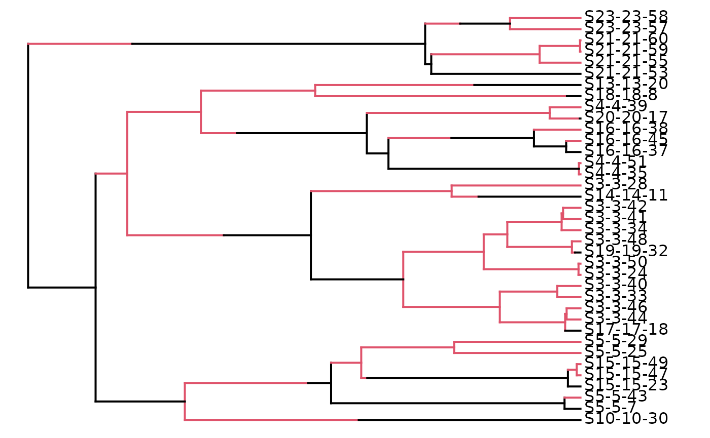

PBD_ML_demo.RmdThis document gives a demonstration how to use the package to obtain a maximum-likelihood estimate of the protracted birth-death speciation model.
First thing is to load the PBD package itself:
We will also need ape for branching.times:
Here we simulate a tree with known parameters:
seed <- 43
set.seed(seed)
b_1 <- 0.3 # speciation-initiation rate of good species
la_1 <- 0.2 # speciation-completion rate
b_2 <- b_1 # the speciation-initiation rate of incipient species
mu_1 <- 0.1 # extinction rate of good species
mu_2 <- mu_1 # extinction rate of incipient species
pars <- c(b_1, la_1, b_2, mu_1, mu_2)
age <- 15 # the age for the simulation
phylogenies <- pbd_sim(pars = pars, age = age)
plot(phylogenies$recontree)
plot(phylogenies$igtree.extant)## no colors provided. using the following legend:
## g i
## "black" "#DF536B"
plot(phylogenies$tree)
names(phylogenies)## [1] "tree" "stree_random" "stree_oldest" "stree_youngest"
## [5] "L" "sL_random" "sL_oldest" "sL_youngest"
## [9] "igtree.extinct" "igtree.extant" "recontree" "reconL"
## [13] "L0"Now we try to recover the parameters by maximum likelihood estimation:
brts <- branching.times(phylogenies$recontree) # branching times
init_b <- 0.2 # speciation-initiation rate
init_mu_1 <- 0.05 # extinction rate of good species
init_la_1 <- 0.3 # speciation-completion rate
#init_mu_2 <- 0.05 # extinction rate of incipient species # not used
# The initial values of the parameters that must be optimized
initparsopt <- c(init_b, init_mu_1, init_la_1)
# The extinction rates between incipient and good species are equal
exteq <- TRUE
# The first element of the branching times is the crown age (and not the stem age)
soc <- 2
# Conditioning on non-extinction of the phylogeny
# as I actively selected for a nice phylogeny
cond <- 1
# Give the likelihood of the phylogeny (instead of the likelihood of the branching times)
btorph <- 1Maximum likelihood estimation can now be performed:
r <- pbd_ML(
brts = brts,
initparsopt = initparsopt,
exteq = exteq,
soc = soc,
cond = cond,
btorph = btorph,
verbose = FALSE
)The ML parameter estimates are:
knitr::kable(r)| b | mu_1 | lambda_1 | mu_2 | loglik | df | conv |
|---|---|---|---|---|---|---|
| 0.2642439 | 0 | 0.0425093 | 0 | -33.06632 | 3 | 0 |
Comparing the known true value with the recovered values:
loglik_true <- PBD::pbd_loglik(pars, brts = brts)## Parameters: 0.3, 0.2, 0.3, 0.1, 0.1, Loglikelihood: -36.539337
df <- as.data.frame(r)
df <- rbind(df, c(b_1, mu_1, la_1, mu_2, loglik_true, NA, NA))
row.names(df) <- c("ML", "true")
knitr::kable(df)| b | mu_1 | lambda_1 | mu_2 | loglik | df | conv | |
|---|---|---|---|---|---|---|---|
| ML | 0.2642439 | 0.0 | 0.0425093 | 0.0 | -33.06632 | 3 | 0 |
| true | 0.3000000 | 0.1 | 0.2000000 | 0.1 | -36.53934 | NA | NA |
Ideally, all parameter columns should have the same values.
To test for the uncertainty of our ML estimate, we can do a parametric bootstrap.
The function pbd_bootstrap consists of a few steps:
endmc <- 10 # Sets the number of simulations for the bootstrap
b <- pbd_bootstrap(
brts = brts,
initparsopt = initparsopt,
exteq = exteq,
soc = soc,
cond = cond,
btorph = btorph,
plotltt = FALSE,
endmc = endmc,
seed = seed
)## Finding the maximum likelihood estimates ...
##
## You are optimizing b mu_1 lambda_1
## You are fixing nothing
## Extinction rate of incipient species is exactly the same as for good species.
## The likelihood for the initial parameter values is -35.1429
## Optimizing the likelihood - this may take a while.
##
## Maximum likelihood parameter estimates: b: 0.264410, mu_1: 0.000001, lambda_1: 0.042447, mu_2: 0.000001
## Maximum loglikelihood: -33.066326
## The expected duration of speciation for these parameters is: 7.481272
## The median duration of speciation for these parameters is: 6.868607
## Bootstrapping ...
##
## Simulated data set 1 out of 10
## Simulated data set 2 out of 10
## Simulated data set 3 out of 10
## Simulated data set 4 out of 10
## Simulated data set 5 out of 10
## Simulated data set 6 out of 10
## Simulated data set 7 out of 10
## Simulated data set 8 out of 10
## Simulated data set 9 out of 10
## Simulated data set 10 out of 10
knitr::kable(b[[3]])| ntips | b | mu_1 | lambda_1 | mu_2 | loglik | df | conv | exp_durspec | median_durspec |
|---|---|---|---|---|---|---|---|---|---|
| 7 | 0.1422727 | 0.0061784 | 0.1320537 | 0.0061784 | -16.77821 | 3 | 0 | 5.089709 | 4.043302 |
| 11 | 0.1933750 | 0.0438796 | 0.1737960 | 0.0438796 | -28.24429 | 3 | 0 | 3.666648 | 2.874873 |
| 11 | 0.1924405 | 0.0000003 | 0.1216254 | 0.0000003 | -27.91703 | 3 | 0 | 4.929612 | 4.062803 |
| 18 | 3.3308024 | 3.0589471 | 0.0087039 | 3.0589471 | -49.97862 | 3 | 0 | 4.725257 | 4.219808 |
| 7 | 0.4307373 | 0.1746037 | 0.0102570 | 0.1746037 | -16.89841 | 3 | 0 | 10.699033 | 10.264316 |
| 9 | 6.5081980 | 6.2125488 | 0.0030419 | 6.2125488 | -22.91142 | 3 | 0 | 5.636833 | 5.171768 |
| 11 | 0.3076034 | 0.0008937 | 0.0140706 | 0.0008937 | -28.04804 | 3 | 0 | 10.184653 | 9.870929 |
| 15 | 0.2731540 | 0.0000046 | 0.0509231 | 0.0000046 | -38.97566 | 3 | 0 | 6.775178 | 6.160900 |
| 17 | 0.4716201 | 0.0000020 | 0.0039671 | 0.0000020 | -41.75817 | 3 | 0 | 10.149109 | 10.081916 |
| 35 | 6.8221865 | 6.4782703 | 0.0079636 | 6.4782703 | -94.97368 | 3 | 0 | 3.452355 | 3.063782 |
From the bootstrap analysis, we get
Putting this in a table:
dg <- rbind(df,
list(
b = b[[1]]$b,
mu_1 = b[[1]]$mu_1,
lambda_1 = b[[1]]$lambda_1,
mu_2 = b[[1]]$mu_2,
loglik = b[[1]]$loglik,
df = b[[1]]$df,
conv = b[[1]]$conv
),
list(
b = b[[3]]$b,
mu_1 = b[[3]]$mu_1,
lambda_1 = b[[3]]$lambda_1,
mu_2 = b[[3]]$mu_2,
loglik = b[[3]]$loglik,
df = b[[3]]$df,
conv = b[[3]]$conv
)
)
dg## b mu_1 lambda_1 mu_2 loglik df conv
## ML 0.2642439 6.424792e-10 0.042509306 6.424792e-10 -33.06632 3 0
## true 0.3000000 1.000000e-01 0.200000000 1.000000e-01 -36.53934 NA NA
## 1 0.2644103 1.293611e-06 0.042447108 1.293611e-06 -33.06633 3 0
## 11 0.1422727 6.178418e-03 0.132053688 6.178418e-03 -16.77821 3 0
## 2 0.1933750 4.387956e-02 0.173796013 4.387956e-02 -28.24429 3 0
## 3 0.1924405 2.544596e-07 0.121625361 2.544596e-07 -27.91703 3 0
## 4 3.3308024 3.058947e+00 0.008703876 3.058947e+00 -49.97862 3 0
## 5 0.4307373 1.746037e-01 0.010257024 1.746037e-01 -16.89841 3 0
## 6 6.5081980 6.212549e+00 0.003041870 6.212549e+00 -22.91142 3 0
## 7 0.3076034 8.936738e-04 0.014070605 8.936738e-04 -28.04804 3 0
## 8 0.2731540 4.576958e-06 0.050923109 4.576958e-06 -38.97566 3 0
## 9 0.4716201 2.005959e-06 0.003967112 2.005959e-06 -41.75817 3 0
## 10 6.8221865 6.478270e+00 0.007963620 6.478270e+00 -94.97368 3 0| b | mu_1 | lambda_1 | mu_2 | loglik | df | conv | |
|---|---|---|---|---|---|---|---|
| ML | 0.2642439 | 0.0000000 | 0.0425093 | 0.0000000 | -33.06632 | 3 | 0 |
| true | 0.3000000 | 0.1000000 | 0.2000000 | 0.1000000 | -36.53934 | NA | NA |
| ML2 | 0.2644103 | 0.0000013 | 0.0424471 | 0.0000013 | -33.06633 | 3 | 0 |
| BS1 | 0.1422727 | 0.0061784 | 0.1320537 | 0.0061784 | -16.77821 | 3 | 0 |
| BS2 | 0.1933750 | 0.0438796 | 0.1737960 | 0.0438796 | -28.24429 | 3 | 0 |
| BS3 | 0.1924405 | 0.0000003 | 0.1216254 | 0.0000003 | -27.91703 | 3 | 0 |
| BS4 | 3.3308024 | 3.0589471 | 0.0087039 | 3.0589471 | -49.97862 | 3 | 0 |
| BS5 | 0.4307373 | 0.1746037 | 0.0102570 | 0.1746037 | -16.89841 | 3 | 0 |
| BS6 | 6.5081980 | 6.2125488 | 0.0030419 | 6.2125488 | -22.91142 | 3 | 0 |
| BS7 | 0.3076034 | 0.0008937 | 0.0140706 | 0.0008937 | -28.04804 | 3 | 0 |
| BS8 | 0.2731540 | 0.0000046 | 0.0509231 | 0.0000046 | -38.97566 | 3 | 0 |
| BS9 | 0.4716201 | 0.0000020 | 0.0039671 | 0.0000020 | -41.75817 | 3 | 0 |
| BS10 | 6.8221865 | 6.4782703 | 0.0079636 | 6.4782703 | -94.97368 | 3 | 0 |
We expect rows ML and ML2 to be identical. Their values are indeed very similar.
We can calculate the loglikelihood for
ml_b <- b[[1]]$b
ml_mu_1 <- b[[1]]$mu_1
ml_la_1 <- b[[1]]$lambda_1
ml_mu_2 <- b[[1]]$mu_2
ml_pars1 <- c(ml_b, ml_mu_1, ml_la_1, ml_mu_2)
ml_pars2 <- c(cond, btorph, soc, 0, "lsoda")
l <- pbd_loglik(
pars1 = ml_pars1,
pars2 = ml_pars2,
brts = brts
)
print(l)## [1] -33.06633# Create .md, .html, and .pdf files
setwd(paste(getwd(), "vignettes", sep = "/"))
knit("PBD_ML_demo.Rmd")
markdown::markdownToHTML('PBD_ML_demo.md', 'PBD_ML_demo.html', options=c("use_xhml"))
system("pandoc -s PBD_ML_demo.html -o PBD_ML_demo.pdf")